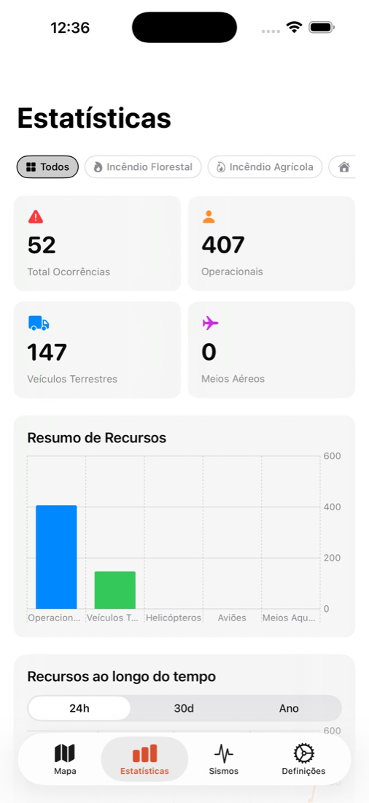
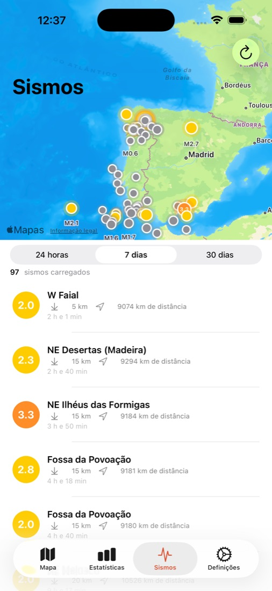
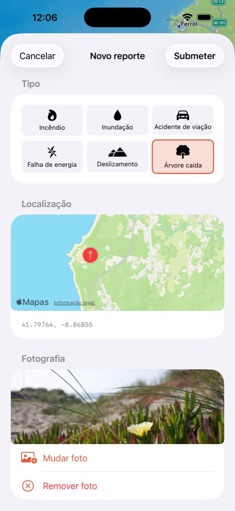

Civil protection alerts for your area, on your phone.
See every ANEPC incident and IPMA earthquake on a live map. When something new happens near you, or near the places you care about, Alerta tells you right away.

- Step 1
Set your area
A radius around where you are, whole districts, or places you choose, like your parents' home.
- Step 2
Choose what you want to know
Fires, accidents, floods, fallen trees, earthquakes above a magnitude. Only what matters to you.
- Step 3
Get the alert
A notification with the type of incident, how far away it is and exactly where.
Inside the app
Everything civil protection publishes, laid out to be read quickly, even under stress.

Every incident, in detail
Where it is, since when, what state it's in and how many resources are on the scene.
- Firefighters, vehicles and aircraft
- Timeline since dispatch
- Severity and current status

The country in numbers
Active incidents, personnel, vehicles and aircraft across Portugal, with charts for 24 hours, 30 days or a year, and by district.

Earthquakes
Official IPMA data for mainland Portugal, Madeira and the Azores, and USGS data for the rest of the world. History for 24 hours, 7 or 30 days, and alerts only above the magnitude you choose.

Report what you see
A fallen tree, a blocked road, a power cut: pick the type, take a photo and send. The photo's location data is removed before it's published, and an operator reviews every report.
Sign in with Apple or Google, or report anonymously.

From Civilian to Mythic
Ten reputation levels. Every report an operator confirms raises your trust, and invalid reports lower it. Follow your reports and your progress to the next level.
More features
Safety Circle
Share your location with family and friends, send an SOS or tell them you're safe.
My Places
Get alerts for places other than where you are, like your parents' home or a holiday house.
Area alerts
Follow whole districts or ANEPC sub-regional commands.
Major incidents
A nationwide alert when an incident draws a large response. You can turn it off.
Alerts that follow you
Optional: the app keeps your alert area up to date in the background while you travel, even when closed.
Map legend
Every colour and symbol explained, and an eye on incidents under observation.
Where the data comes from
Public, official sources, checked automatically.
Portugal's National Authority for Emergency and Civil Protection. Incidents nationwide, checked every 10 minutes.
Portuguese Institute for Sea and Atmosphere. Earthquakes in mainland Portugal, Madeira and the Azores.
United States Geological Survey. Earthquakes in the rest of the world.
Reports from users, moderated by operators and always marked as such.
Alerta is for information only and does not replace official channels. In an emergency, call 112.
Requirements
- iOS 18.0 or later
- iPadOS 18.0 or later
- macOS 15.0 or later
- Android 8.0 or later
Support
Questions or feedback? Email walter.tengler@gmail.com.
Alerta uses official data from Portuguese civil protection. Your location never leaves your device without your consent.